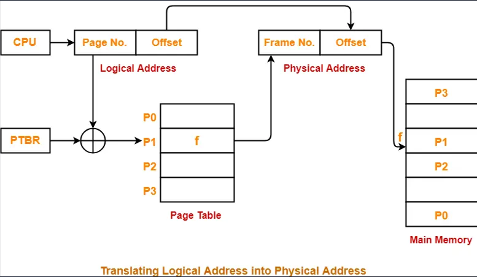

Introduction
Paging is a memory management scheme that eliminates the need for contiguous allocation of physical memory. It divides both physical and logical memory into fixed-size blocks called page frames and pages, respectively. This approach offers several advantages, including efficient memory utilization and support for virtual memory systems.
Key Concepts
Page Frames
Page frames are fixed-size blocks in physical memory that correspond to the size of pages used by processes. They serve as the unit of allocation for processes.
Pages
Pages are fixed-size blocks in the logical address space of a process. They match the size of page frames and are mapped to page frames in physical memory.
Page Tables
Page tables are data structures used by the operating system to map logical addresses to physical addresses. They maintain the mapping between logical pages and physical page frames.
Logical and Physical Addresses
Logical addresses are addresses generated by the CPU and are used by processes. Physical addresses are addresses in physical memory where data is stored.
Address Translation
Address translation is the process of converting logical addresses to physical addresses using the information stored in the page table.
